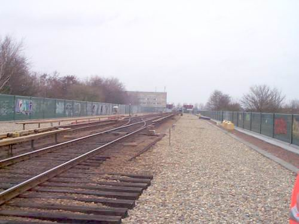
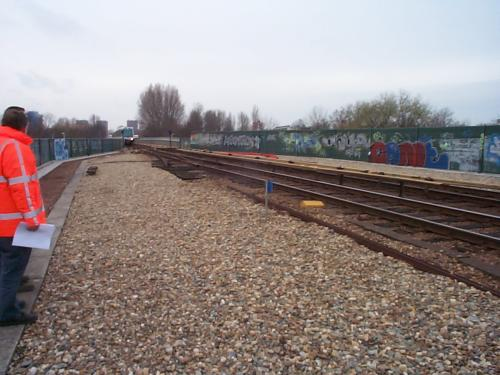
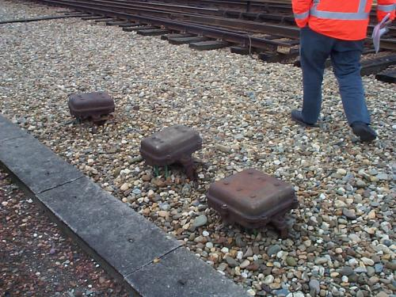
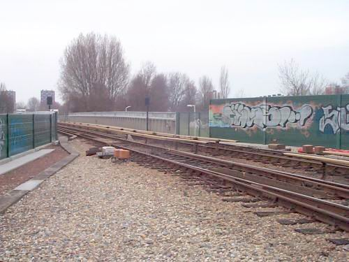
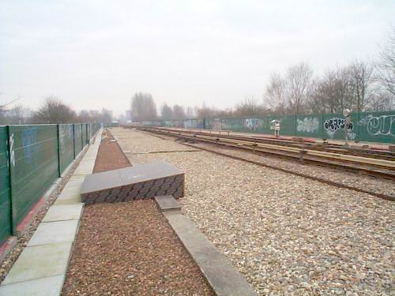

Ombouw wisselcomplex Aveling deel 1...
- woensdag 10 december 2008 15:22
- Geschreven door Joachim
In week 21 moet het gaan gebeuren. Hét moment: in het Hemelvaartsweekend zal er een keerspoor worden gelegd op de plek waar nu nog afgekapte wissels liggen: de Aveling. Voor menig reiziger onbekend, voor de metro/spoorkenner een begrip. Wisselcomplex 'Aveling' bevindt zicht ter hoogte van de gelijknamige weg in Hoogvliet, tussen de stations Hoogvliet en Zalmplaat. Toen de lijn naar Hoogvliet/Zalmplaat werd geopend in 1974, waren de inmiddels gesloopte opstelsporen nog in dienst.
Omdat er bezuinigd moet worden, is besloten tot het aanleggen van een keerspoor. Dit keerspoor was ook al gepland met de bouw van de Beneluxlijn, en zou later gebouwd gaan worden. De treinen van de Calandlijn zullen na de komende zomervakantie keren op het keerspoor van de Aveling en dus niet verder rijden dan Hoogvliet. De Erasmuslijn rijdt wél door tot station de Akkers.
Het ombouwproces is al begonnen, vanaf deze week wordt er begonnen met de voorbereidingen aan de bouw. Dat zal duren tot week 21. In het Hemelvaarstweekend zullen de metro's van zowel de Calandlijn als de Erasmuslijn vier dagen lang niet verder rijden dan de stations Hoogvliet of Tussenwater. In deze vier dagen zal er voor zover bekend géén metroverkeer mogelijk zijn van en naar station de Akkers, er zal worden gependeld met bussen. Vanaf week 24 zullen de werkzaamheden zo goed als afgerond zijn.
Wij ontvingen de volgende foto's van de Aveling, zoals het wisselcomplex er nu nog bijligt (met dank aan RZ):

Wisselcomplex Aveling ligt op een verhoogde aarde-baan...

Voor veel bestuurders bekend: op deze plek schud je af en toe van je stoel als je hard doorrijdt!

Oude spoortrafo's/signaleringspotten van toen de opstelsporen er nog lagen...

Na week 21 zal het er anders uit gaan zien...

Overzichtsfoto genomen vanaf het einde (aan de kant van station Hoogvliet) van de Aveling. Ja: die Aveling is echt langer dan je denkt!